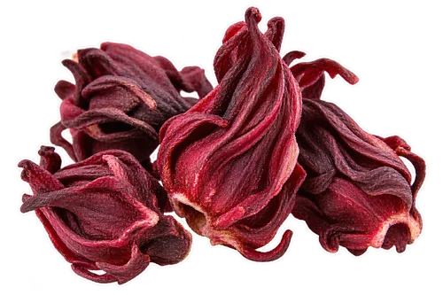

Gather your ingredients
For two cups. The optional additions are yours to choose.

1 tablespoon dried food-grade hibiscus calyces 4 thin slices fresh ginger (about 5 g), washed
4 thin slices fresh ginger (about 5 g), washed- 2 cups water (480 ml)
- Optional: 1–2 teaspoons sugar or honey, to taste
How to make it
Rinse and thinly slice the ginger. Measure the dried hibiscus. Choose food-grade dried Hibiscus sabdariffa sold for drinks, not ornamental flowers picked from an unidentified plant.
Put 2 cups of water and the ginger in a small saucepan. Bring to a boil, then lower the heat and gently simmer for 3 minutes.
Turn off the heat. Add the hibiscus, cover, and steep for 5–7 minutes. Start tasting at 5 minutes; the tea should be pleasantly tart, with ginger in the background.
Strain into a heat-safe jug, then divide between two cups. Taste before sweetening. Add a little sweetener if you like, or dilute with a splash of hot water for a gentler cup.
Calyces, rather than ornamental blossoms
The dried hibiscus used in drinks is the red calyx material, often labeled hibiscus, roselle, or flor de jamaica. Check that the product is intended for food use. Its crinkled burgundy appearance is different from a large open ornamental hibiscus flower.
Why the ginger goes first
A short simmer gives the ginger a head start. Hibiscus goes in after the heat is off, so you can choose its steeping time separately. You can make the whole batch in a saucepan and transfer it to a glass teapot for serving.
Make it iced
Strain the finished tea, let it stop steaming, and chill promptly in a covered container. Serve over ice. If making it for immediate iced serving, brew with 1½ cups of water and add ½ cup of cold drinking water after straining; melting ice will soften it further.
Balance tartness and heat
Too tart? Dilute first, then add sweetener if needed. Too gingery? Use two slices in the next pot. Too mild? Try six slices, keeping the same short simmer. Change one thing at a time so you know which adjustment you liked.
A bright serving idea
Serve the warm tea in clear cups to enjoy its color. For an iced glass, a thin washed lemon slice is an optional garnish, but taste first: the hibiscus already brings plenty of tartness. A small batch lets you explore the balance without committing to a large pitcher.
Use a saucepan for the first stage
This recipe has two stages: ginger simmers in water, then hibiscus steeps after the heat is turned off. A small saucepan with a lid is the simplest tool for both. You also need a tablespoon measure, a knife and cutting board, a fine strainer, and a heat-safe jug or cups. A clear glass teapot can be used for serving without being used on the stove. Check the manufacturer’s instructions before heating any glass vessel directly; its appearance alone does not tell you how it is designed to be used.
Make ginger slices easier to compare
Cut the ginger into thin slices of roughly similar thickness so the written four-slice starting point is useful. The approximate 5 g weight helps if your ginger root is especially wide or narrow. Scrub and rinse the root before cutting, and trim damaged areas. If you peel it, use a light touch rather than removing a large part of the flesh. The point is to prepare a small, controllable amount. A handful of large chunks would be a different recipe and could change the balance between the ginger and hibiscus.
A four-cup batch with the same balance
To make four cups, start with 2 tablespoons dried culinary hibiscus, about 10 g fresh ginger cut into thin slices, and 4 cups water, about 960 ml. Simmer the ginger for the same 3 minutes and begin tasting the hibiscus after the same 5-minute steep. A larger volume may take longer to reach a boil; that is separate from the simmer and steep. Strain the whole batch before serving so the last cup does not keep steeping while the first person drinks theirs. Offer sweetener separately rather than assuming everyone wants the same sweetness.
Decide how sweet you want the pot
Start by tasting a comfortably warm spoonful of the strained tea. For the two-cup recipe, add 1 teaspoon of sweetener to the whole pot, stir, and taste again before adding the second teaspoon. You can also leave the pot unsweetened and let each person sweeten their cup. If making an iced version, dissolving granulated sugar while the tea is still warm is convenient. Remember which amount you used so the next batch begins near your preference. The optional amount is a flavor suggestion, not a nutritional recommendation.
Prepare an iced glass with a plan for dilution
Ice changes the balance as it melts, so taste the chilled tea before filling your glass. Pour a small amount over a few cubes first if you are still choosing your preferred strength. For a picnic or table pitcher, keep the tea chilled and add ice to individual glasses at serving time rather than leaving a large mound of ice melting in the whole batch. The concentrated option in the recipe is another starting point. If it tastes stronger than you like, add a little cold drinking water and record the adjustment.
Troubleshoot by changing one part at a time
If the drink is tart and the ginger feels strong as well, begin with dilution: add a little water to a small sample cup and taste it. If that helps, adjust the pot by the same approach. Next time, change either the hibiscus amount or the ginger amount first, keeping the other ingredient and the timing steady. If the cup tastes pleasant but looks different from the generated photograph, keep the version you enjoy. The practical goal is a repeatable flavor you like, not an exact match to a styled image or another person’s preferred intensity.
Keeping a little for later
For the best flavor, make a small pot close to serving. If keeping some, strain out the botanicals, cover, and refrigerate promptly. Make only what you expect to use soon. Do not leave a pot sitting out all day or treat homemade tea as shelf-stable.
FoodSafety.gov recommends refrigerating perishable food within two hours, or one hour above 90°F, and keeping the refrigerator at 40°F or below.
Questions before you brew
Is this the same as a traditional bissap recipe?
This is our simple hibiscus-and-ginger combination. Hibiscus drinks have many names and regional preparations; this recipe does not claim to represent all of them.
Can I use ground ginger?
Fresh slices are easier to strain and control in this method. Ground ginger will leave sediment and needs a separate adjustment; start with fresh ginger for the recipe as written.
Made for flavor and everyday enjoyment. Read our recipe and image standards.